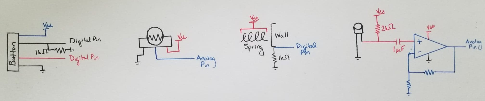
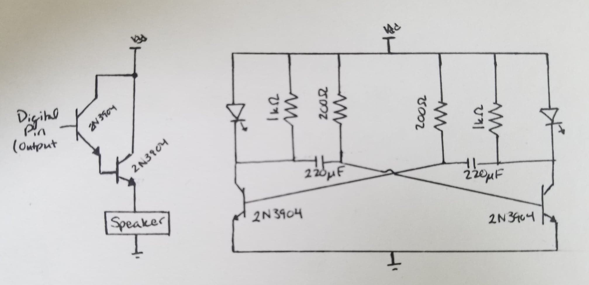

Electrical Subsystem
This subsystem was probably the most exciting for me, and the most subject to limitations with regard to components, although this was mitigated as much as possible. The electrical subsystem consisted of 6 main circuits, as well as some standard LED circuits and a PIC24 microcontroller to power and control. The four main functions each have their own circuit, outlined below.

The twist circuit was relatively simple, only needing to hook up a potentiometer to an analog pin on the PIC board. The bop circuit required some more thinking, as it couldn’t “float” at a value. To prevent that from happening, a pull-down resistor was implemented on the pin that corresponded to the detection of a button press. This was also wired up in a way that would tell the user when it had completed this, as the button itself would light up when pressed. For the pull circuit, this was a simple matter of creating a connecting circuit with another pull-down resistor. The shout circuit was the most complex, as it required some amplification as well as its own specified circuit. The amplification was achieved via an LMC6484 op-amp.

The other two main circuits were the speaker driver and the astable multivibrator, as extra sort of “learning” circuits for me. The speaker driver circuit, after much experimentation, was created using a Darlington pair, shown below, with the speaker serving as a bias resistor. While this theoretically worked by driving it with a square wave in the software via a digital pin, the speaker was not powerful enough to hear the sound unless you were very close to it. The astable multivibrator circuit was quite interesting, and I formed it with two 200ohm resistors, two 1kohm resistors, and two 220uF capacitors. The choosing of these various values affect the frequency at which the oscillation happens, but these values provide a fast but visible switching between the two LEDs.
As PCB orders weren't really an option, all of this was completed via breadboard for prototyping, and then it had to be soldered onto protoboard. These were then led over wires to the respective pins on the PIC24.